27/28 lolos audit dan terpasang. Semua karakter dipilih dari entri dengan informasi lengkap. Ilustrasi adalah interpretasi artistik AI berdasarkan sumber riset.
Rồng (Vietnamese dragon)
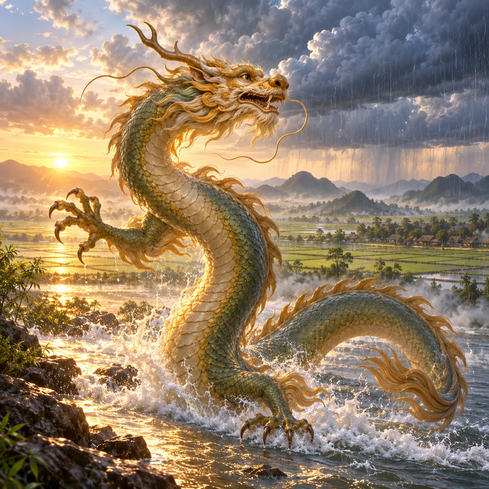
Living Lê Vietnamese dragon with forked horn, prominent lionlike head and two five-clawed feet ascending from water.
Aura: Living Lê Vietnamese dragon with forked horn, prominent lionlike head and two five-clawed feet ascending from water.
Audit ciri dan sumber
Le variant: broad lion-like face, forked horn, two principal body bends, exactly two feet with five differentiated claws each; rain and water, no wings or Ly pearl.
Review sumberONE square premium painterly naturalistic Mythics illustration, main batch-1000 house style. A LIVING LÊ-DYNASTY VIETNAMESE RỒNG, choose only Lê variant matching reference, not the hornless Lý form. Raised lion-like dragon head with wide forehead, great prominent nose and strong eyes, one FORKED HORN, long curving body in TWO major sinuous bends, exactly TWO splayed feet each bearing FIVE sharp claws (c11,c26). No leathery wings, no extra hindleg pair, no Lý-specific nose crest/jewel or mixed dynasty anatomy. Ascends from river water benignly toward gathering rain clouds, natural spray and soft rain over distant rice fields (c02,c22); not firebreathing or menacing villagers. Fully living scales, mane and muscles, not a stone staircase ornament, dominant graceful silhouette, natural warm dawn illuminating wet surfaces, no glowing mist/lasers. Original composition, coherent anatomy, no modern film/game/anime/comic design, text, labels, logos, borders, watermark, nudity or graphic gore.
Bedawang Nala
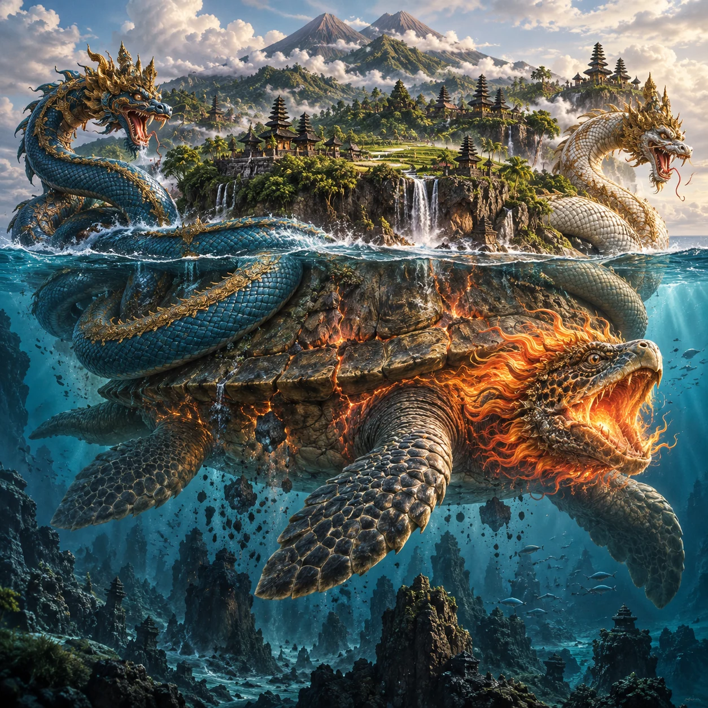
Living fiery cosmic Bedawang supporting Bali, stabilized by two separate nagas.
Aura: Living fiery cosmic Bedawang supporting Bali, stabilized by two separate nagas.
Audit ciri dan sumber
Giant living four-flipper turtle supporting island; two distinct nagas, fiery hair/mouth and fiery turtle c06/c15, cosmic scale explicitly illustrative, no statue.
Review sumberONE square premium painterly naturalistic Mythics illustration, main batch-1000 house style. BEDAWANG NALA, living enormous BALINESE COSMIC TURTLE supporting the WHOLE ISLAND OF BALI on broad shell (c01,c18,c21), one turtle head, FOUR coherent turtle flippers/legs and one short tail, real wet reptile skin and ridged shell. Exactly TWO distinct enormous NAGAS Basuki and Anantabhoga coil around shell to stabilize him, their separate serpent heads clearly readable (c03,c07,c19), not extra turtle heads. Turtle has documented fiery HAIR-like flame fringe and gaping fiery MOUTH (c06,c15), local restrained orange flame, not arbitrary glowing envelope. Undersea/world-support cutaway artistic view with shell rising beneath island rootmass, tiny temples and mountains on island show cosmic size. Turtle slowly shifts weight with subtle geological cracking of supported rock to imply earthquake c18, no destruction victims. Respectful sacred myth, mighty living being, not meru base ornament or sculpture. Original composition, readable anatomy; no modern film/game/anime/comic design, text, logos, labels, border, watermark, nudity or graphic gore.
Frankenstein's monster
Menunggu gambar yang lolos audit
Warak Ngendog
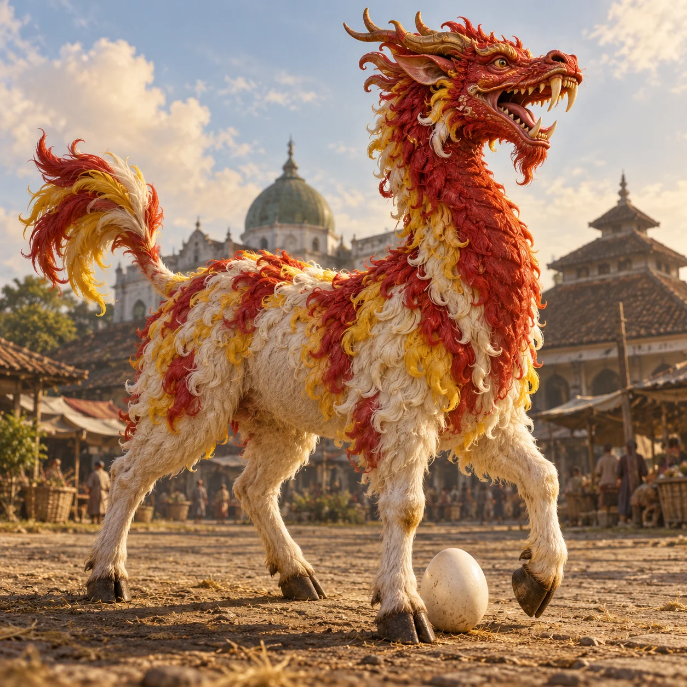
Living pakem Warak with goat body, camel neck, red dragon head, curly feathers and egg between forelegs.
Aura: Living pakem Warak with goat body, camel neck, red dragon head, curly feathers and egg between forelegs.
Audit ciri dan sumber
Living goat body/four hooves, camel neck and dragon head, red neck/head and curled red/yellow/white feathers; white egg under forelegs, no toy.
Review sumberONE square premium painterly naturalistic Mythics illustration, main batch-1000 house style. A LIVING SEMARANG WARAK NGENDOG, imagined four-legged TAILED creature with GOAT-LIKE BODY, LONG CAMEL-LIKE NECK and DRAGON HEAD (c15,c16), exactly four goat legs and one tail, NO wings. Gaping fanged dragon mouth, RED HEAD AND NECK (c24), covered in eye-catching physically coloured CURLY UPSIDE-DOWN FEATHERS like pitik walik, red/yellow/white (c06,c15). One WHITE EGG rests on ground at front BETWEEN TWO FORELEGS, echoing documented placement c14 and purity c19. Proud energetic walking pose on Semarang earth with distant old market/mosque roof silhouette, warm natural light. Flesh, muscle, feathers and hooves clearly alive, not wooden frame, paper toy, parade statue, giraffe/lion variant or ornament. Composite anatomy unmistakable and readable, no generic magical aura. Original composition, coherent anatomy, no modern film/game/anime/comic design, text, labels, logos, borders, watermark, nudity or graphic gore.
Krasue
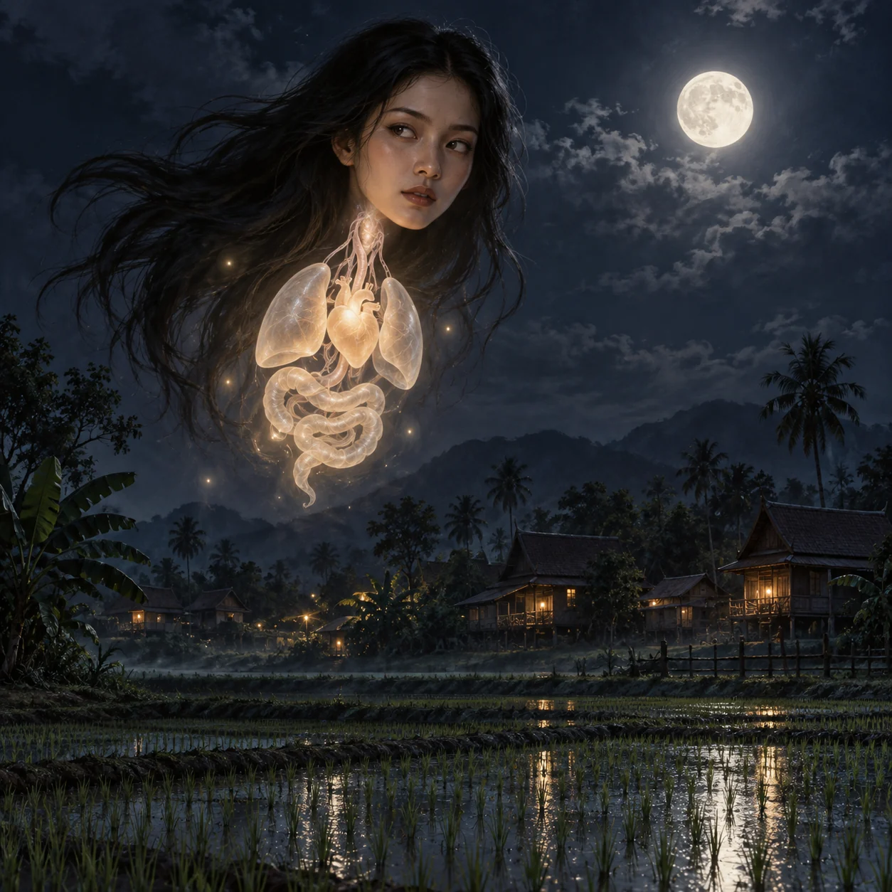
Floating detached Krasue head with non-gory hanging viscera and faint lamp-like glow.
Aura: Floating detached Krasue head with non-gory hanging viscera and faint lamp-like glow.
Audit ciri dan sumber
Floating adult woman's head with separate translucent recognizable lungs, heart and looping entrails; no torso, arms, legs or blood. Restrained localized spirit light above rice fields; tiny background fireflies are natural editorial environment. Non-graphic depiction passes.
Review sumberSquare premium painterly naturalistic illustration for an encyclopedia of folklore. Thai KRASUE adult female spirit in a quiet rice field at night, a luminous floating woman's head with long black hair and an alert mysterious expression. Below neck is a small cluster of softly translucent ivory spirit-organ shapes: simple smooth heart and lung silhouettes and two looping pale intestinal shapes, delicately rendered like frosted glass, entirely clean and non-graphic. This is a fantasy spectral apparition, no violence, no injuries, no blood, no victims. The spirit has no body, arms or legs. Faint localized will-o-the-wisp light surrounds the apparition. Small village rooftops in background, moonlit rice field, haunting respectful folkloric atmosphere, strong original composition, natural night lighting. No neon energy, text, logos, labels, watermark or border.
Nang Tani
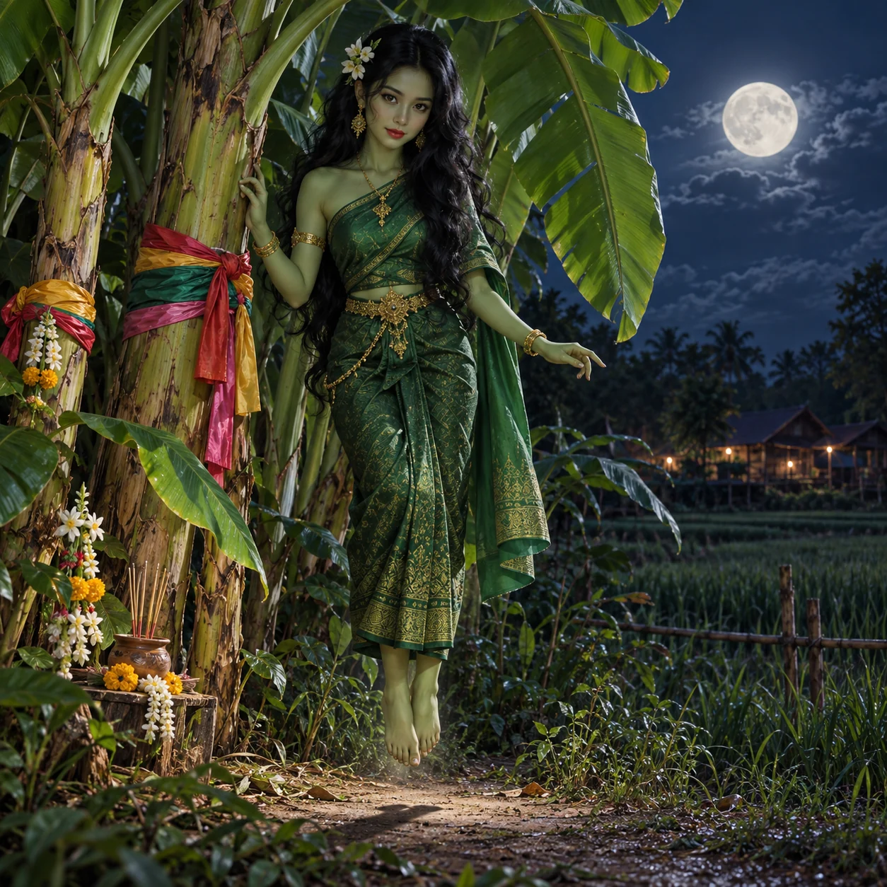
Green-skinned green-dressed Nang Tani with red lips and hovering bare feet among wild banana trees.
Aura: Green-skinned green-dressed Nang Tani with red lips and hovering bare feet among wild banana trees.
Audit ciri dan sumber
Green Thai dress, greenish skin/red lips, long black hair, bare feet visibly hovering with shadow under banana trees at full moon.
Review sumberONE square premium painterly naturalistic Mythics illustration in the main batch-1000 house style. NANG TANI, beautiful living Thai banana-tree spirit with GREENISH SKIN, RED LIPS like ripe ivy gourd, thick BLACK loose hair, traditional opaque GREEN THAI DRESS (c04,c05), one head two arms two legs, both BARE FEET HOVER a few inches clear of ground and a small visible ground shadow (c05). Emerges protectively between broad-leaf WILD BANANA TRUNKS at village-outskirts field edge in full-moon night (c01,c04,c07), trunk tied with physical coloured satin and small flowers/incense offerings (c06). Her benevolent uncanny direct gaze, gently poised hand and unmistakable skin/hovering establish spirit presence. Natural silvery moonlight, rich leaves and skin tones, no luminous green mist, light beam, wings, body dissolving into tree or modern film/cartoon designs. Coherent anatomy, original composition. No text, labels, logos, borders, watermark, nudity or graphic gore.
Sarimanok
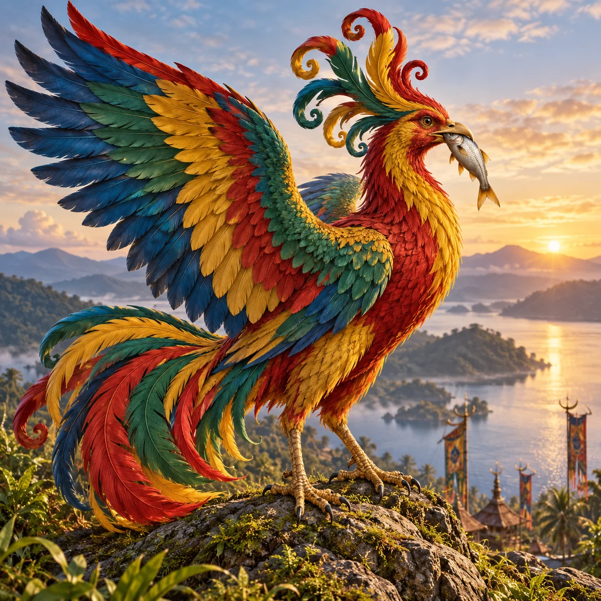
Living colourful spiral-crested Sarimanok bearing a fish in its beak beside Maranao standards.
Aura: Living colourful spiral-crested Sarimanok bearing a fish in its beak beside Maranao standards.
Audit ciri dan sumber
Living feathered fowl with colorful wings/tail and curling crest motif; fish held in beak, two legs; natural lake sunset, no wood ornament.
Review sumberONE square premium painterly naturalistic Mythics illustration, main batch-1000 house style. A LIVING MARANAO SARIMANOK legendary fowl of Mindanao (c01,c02), one bird head, two wings, TWO bird legs/talons and one glorious feathered tail. Vivid physically pigmented red, yellow, green and blue wing/tail feathers; head crest feathers naturally curl into clearly visible scroll/leaf/SPIRAL shapes interpreting documented head motifs (c02), never metal ornamental sculpture. One intact small FISH visibly carried in BEAK (c02,c15), no gore. Magnificent alert regal pose with wings partly lifted by high lake-region shore (c08); a few distant traditional flags and standards preserve c04 display context. Natural sunrise glints on feather colour, commanding mythical totem appearance through spectacular feather silhouette and fish rather than generic glowing bird. Not a wooden carving, toy, phoenix firebird or ordinary rooster. Original composition, coherent anatomy, no modern film/game/anime/comic design, text, labels, logos, borders, watermark, nudity or graphic gore.
Singa (Batak)
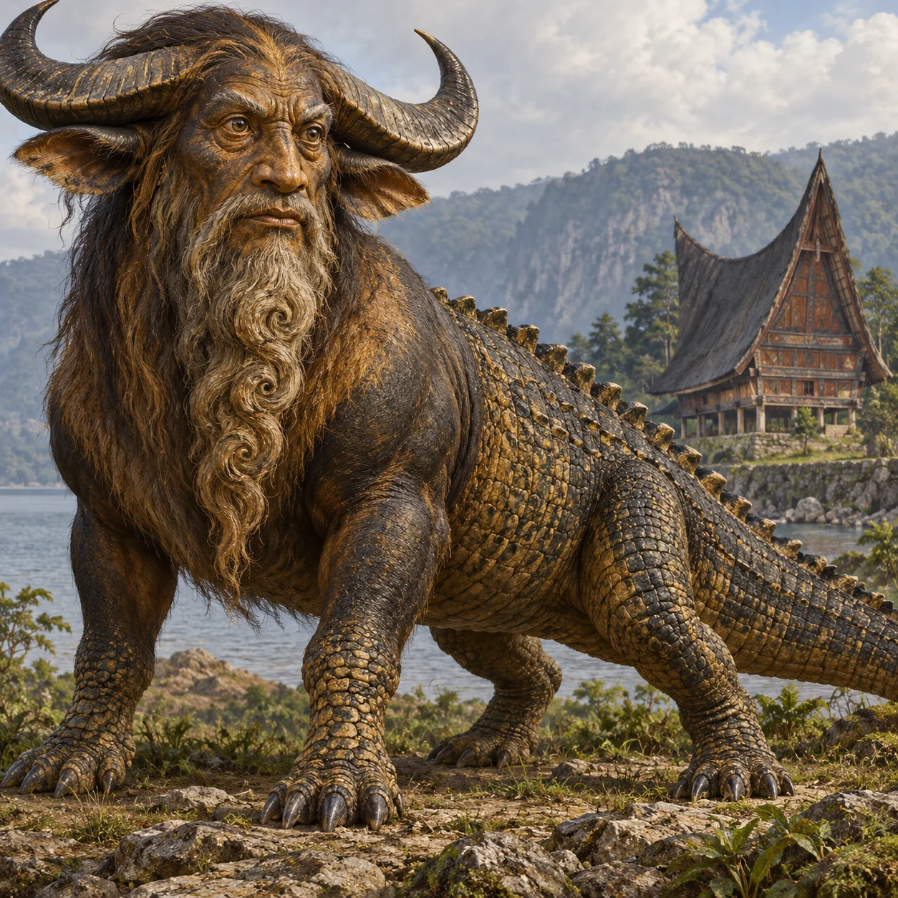
Living Batak human-buffalo-reptile Singa with elongated face, bulging eyes, defined nose and spiral beard.
Aura: Living Batak human-buffalo-reptile Singa with elongated face, bulging eyes, defined nose and spiral beard.
Audit ciri dan sumber
Living human/buffalo/reptile composite: human long nose and prominent eyes, buffalo horns and ears, spiral beard, four reptile feet; Batak house, no added wings.
Review sumberONE square premium painterly naturalistic Mythics illustration, main batch-1000 house style. A LIVING BATAK SINGA GUARDIAN, not a zoological lion (c01,c02), documented blend HUMAN, WATER BUFFALO and CROCODILE/LIZARD. One long expressive face with bulging eyes, clearly defined humanlike nose and long SPIRAL BEARD (c01), physical buffalo-like head/horn structure and powerful buffalo shoulders joining a long low scaled crocodile-like body and tail, FOUR coherent reptile legs; exact composite arrangement is editorial reading of c01,c06, not a fixed researched limb formula. Majestic benevolent protective gaze, alert grounded stance before distant Batak ancestral house (c03,c09), creature fills frame. Natural earth, black and warm ochre palette informed by c15 traditional colourwork; realistic scales and living hair, not carved vessel, statue or toy. No wing, glowing energy, lion mane, armour or human riders. Original composition, coherent anatomy, no modern film/game/anime/comic design, text, labels, logos, borders, watermark, nudity or graphic gore.
Nawarupa
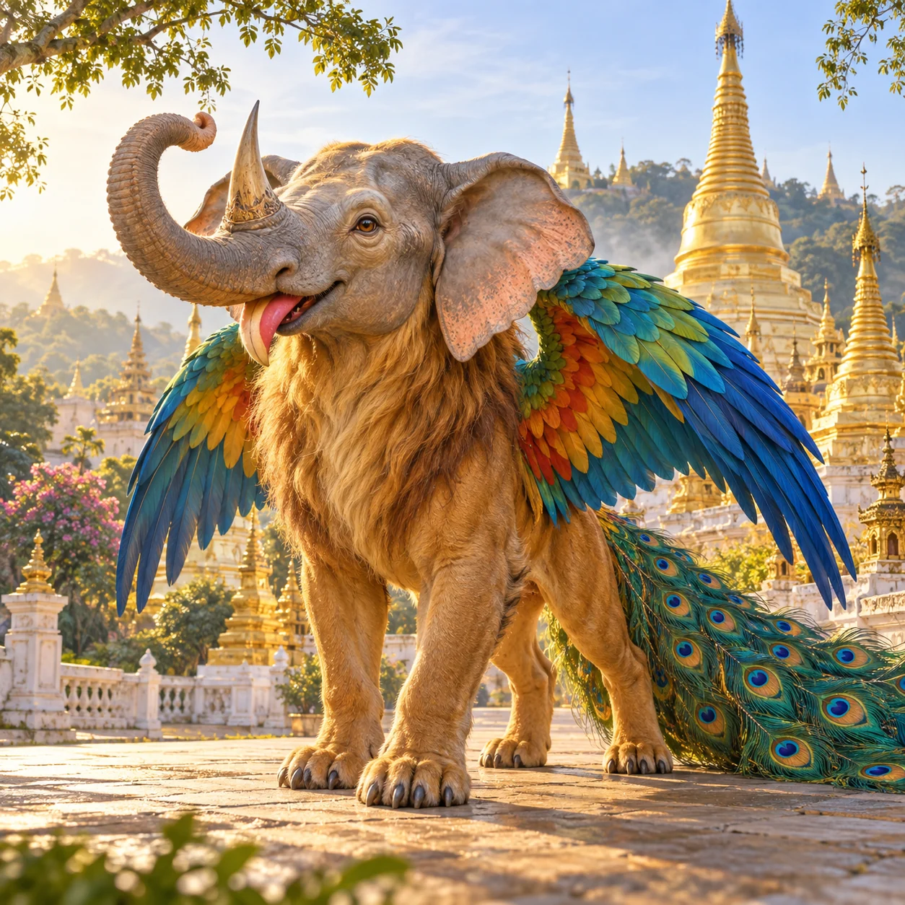
Living c02 Nawarupa with elephant head, deer eyes, rhino horn, parrot tongue/wings, lion body/legs and peafowl tail.
Aura: Living c02 Nawarupa with elephant head, deer eyes, rhino horn, parrot tongue/wings, lion body/legs and peafowl tail.
Audit ciri dan sumber
Elephant head/trunk, gentle deer eyes, rhino nasal horn, parrot tongue and two wings, lion body/four paws, peafowl tail; living smiling auspicious creature.
Review sumberONE square premium painterly naturalistic Mythics illustration, main batch-1000 house style. A LIVING BURMESE NAWARUPA in the c02 ELEPHANT/DEER/RHINO/PARROT/LION/PEAFOWL listed-feature variant only. One ELEPHANT HEAD with trunk and normal elephant ears, gentle DEER EYES, one RHINOCEROS-style nasal HORN, physical PARROT TONGUE glimpsed at mouth plus TWO PARROT FEATHERED WINGS, powerful LION BODY with FOUR lion LEGS/PAWS, and a long graceful PEAFOWL FEATHER TAIL (c02). Each documented feature individually visible, one coherent chimeric animal not multiple fused heads. Peaceful welcoming facial expression (c08,c10). Stands beside a Myanmar pagoda grove c09 in natural early sunlight, flesh/fur/scales/feathers alive, full body readable. NO bull hump, fish tail or horse legs borrowed from differing royal-barge c07 variant; no boat, statue, metal plating, extra limbs, laser or halo. Original composition, readable anatomy; no modern film/game/anime/comic design, text, logos, labels, border, watermark, nudity or graphic gore.
Duende
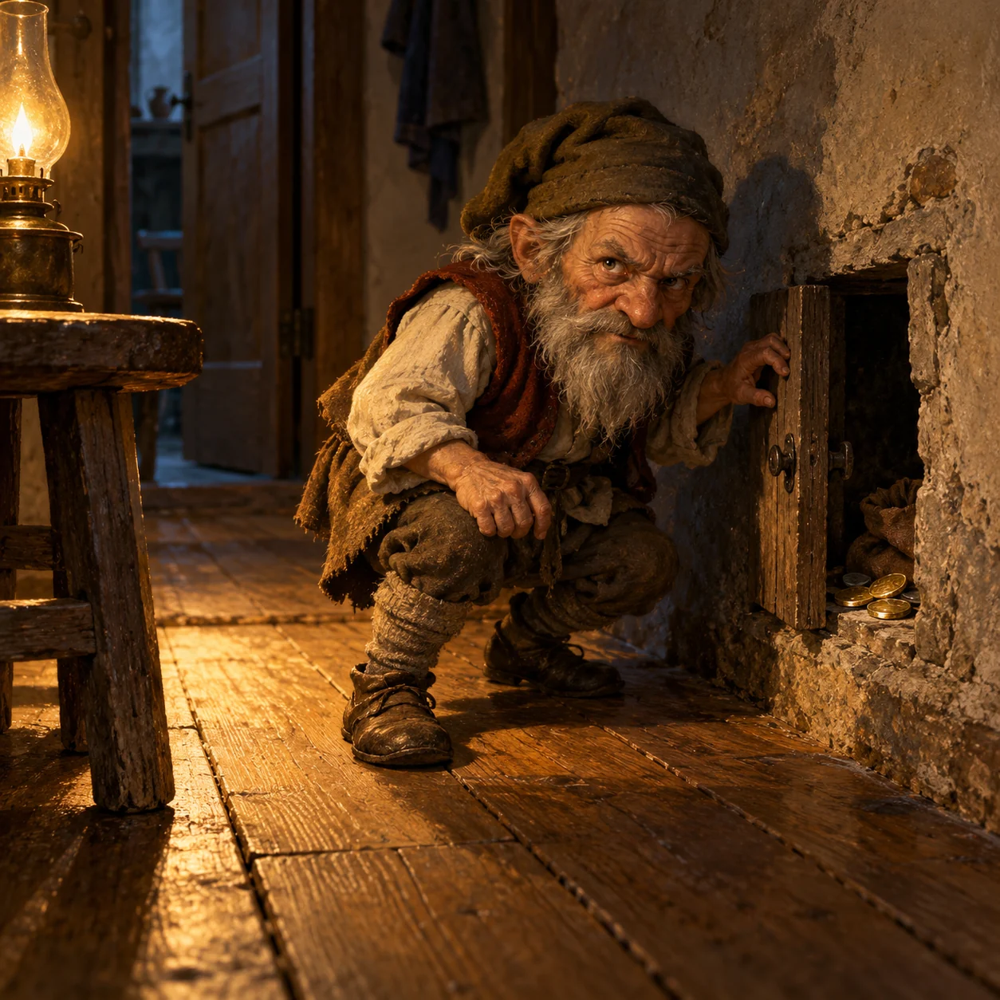
Small Iberian humanlike house duende guarding a dark wall cavity and hidden coins.
Aura: Small Iberian humanlike house duende guarding a dark wall cavity and hidden coins.
Audit ciri dan sumber
Small human-form house spirit with cap and beard, two arms/two legs, natural ears without elongated elf points. Wall cavity and treasure, natural lamplight.
Review sumberONE square premium painterly naturalistic Mythics illustration, main batch-1000 house style. An IBERIAN DUENDE, small HUMANLIKE DWARF/GNOME house spirit (c01,c02,c14), one elderly-looking little figure with one head two arms two legs, natural human ears and face, mischievous sharp watchful expression. NO pointy ears, animal limbs or wings. Stands by a partly open old household wall cavity above a few small coins alluding to hidden underground treasure c12; towering ordinary floorboards, wooden stool and doorway establish dwarf stature without invented giant body. Modest rustic historic cloth tunic and trousers, grey beard and cap are explicitly editorial choices, not claimed fixed anatomy. Crouching half-step and tense direct gaze make eerie goblin presence, natural warm oil-lamp light against cold dark wall, no glow, curse beams or magical mist. Single living spirit, not Goya satire reproduction, toy or ordinary child. Original composition, coherent anatomy, no modern film/game/anime/comic design, text, labels, logos, borders, watermark, nudity or graphic gore.
Pyinsarupa
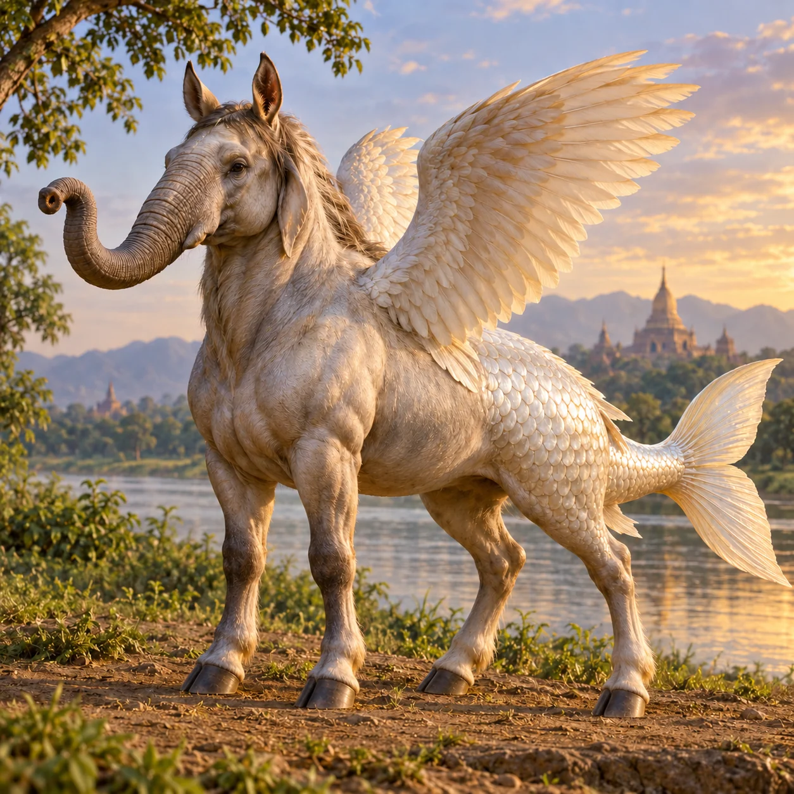
Living five-part catalog Pyinsarupa: elephant trunk, buffalo body, horse legs/ears, white carp tail/scales and goose wings.
Aura: Living five-part catalog Pyinsarupa: elephant trunk, buffalo body, horse legs/ears, white carp tail/scales and goose wings.
Audit ciri dan sumber
Corrected all four hooves to unsplit horse hooves, four legs, horse ears, buffalo body, elephant trunk, fish scales/tail and two hamsa wings; no conflicting antler/naga variant.
Review sumberEdit ONLY four feet. Replace every CLOVEN split hoof with a natural HORSE hoof: ONE solid smooth rounded unbroken hoof capsule per leg, no split grooves or two toes. Exactly FOUR horse legs and four single horse hooves. Preserve trunk, horse ears, buffalo body, fish scales and tail, two white hamsa wings, all composition and colors. No other changes.
Red Boy
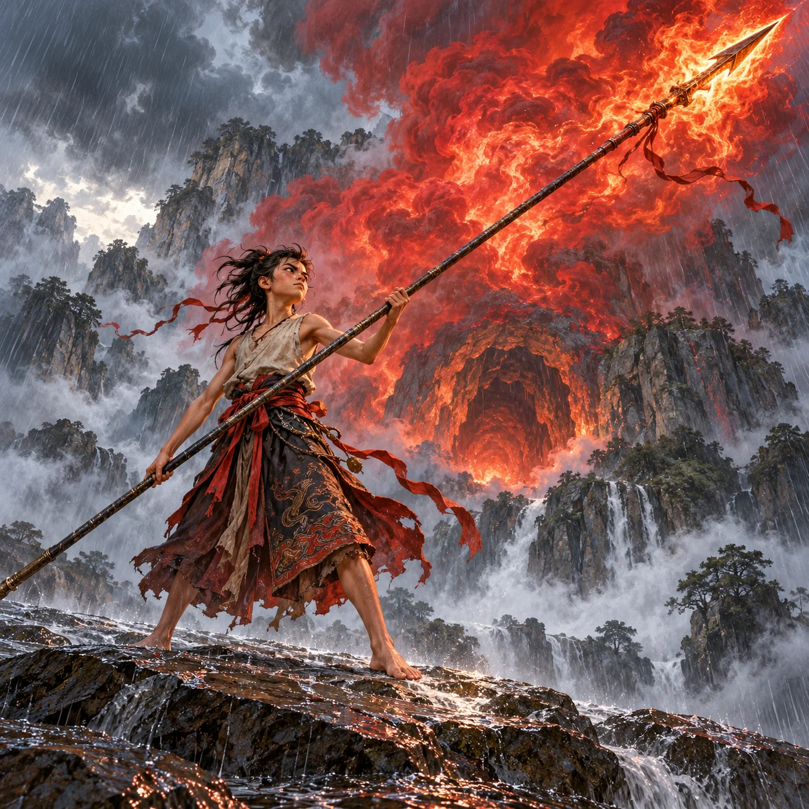
Pre-subjugation young demon Red Boy in Journey to the West.
Aura: Samadhi fire and red fire cloud directly supported c05,c06,c11; no generic glow.
Audit ciri dan sumber
Pre-subjugation young fierce demon with embroidered skirt and bare feet, no armor; long fire-tipped spear, red Samadhi fire cloud continues in rain, modest cloth top editorial.
Review sumberONE square premium painterly naturalistic Mythics illustration, main batch-1000 house style. Youthful fierce human-shaped boy, ONE head TWO arms TWO bare feet; embroidered war skirt c09 and modest sleeveless plain cloth top editorial for catalogue coverage, NO armor, bull horns, red skin or adult physique. Holds EXTRA LONG fire-tipped spear c09, diagonal full shaft eighteen chi indicated by being several body lengths; dynamic defiant stance before Mount Hao Fire Cloud Cave c10. Samadhi true fire billows in RED CLOUD c06 behind spear, localized but fierce, surviving natural rain c11, no hair made of fire. Pre-subjugation hair style editorial, do not mix later shaved three-tufts or golden restraint. Living formidable presence and original composition, anatomically coherent full silhouette. No text, labels, logos, borders, watermark, nudity, graphic gore, modern film/game/anime/comic designs.
Six-Eared Macaque
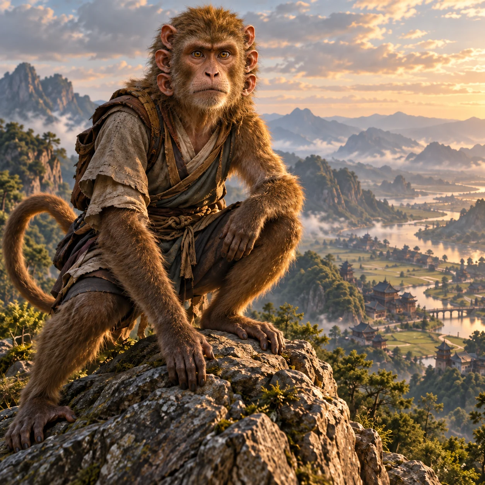
True form Six-Eared Macaque, distinct from impersonation variant.
Aura: Distant-listening aura through attentive posture and vast landscape c10c11, no invented visible energy.
Audit ciri dan sumber
Corrected frontal head clearly displays six ears, three separated on each side; two arms/two legs/one tail, natural brown macaque fur and attentive listening posture, no film/game costume.
Review sumberEdit this living Six-Eared Macaque only at head/ears. Rotate HEAD to face directly toward viewer, so BOTH sides of head are equally visible. REMOVE ALL existing clustered ears. Now create exactly SIX natural macaque ears TOTAL, precisely THREE on viewer left of head and THREE on viewer right of head. Vertical stack each side: one high near temple, one middle at cheek, one low beside jaw. Clearly spaced dark gaps between three ears; six ears fully visible and unhidden by hair. No extra ears, heads or horns. Preserve brown fur, alert listening expression, crouching pose, two arms two legs one tail, plain travel clothing, mountain landscape and painterly style. Six ears: three left, three right. No visible text or diagram labels.
Abumi-guchi
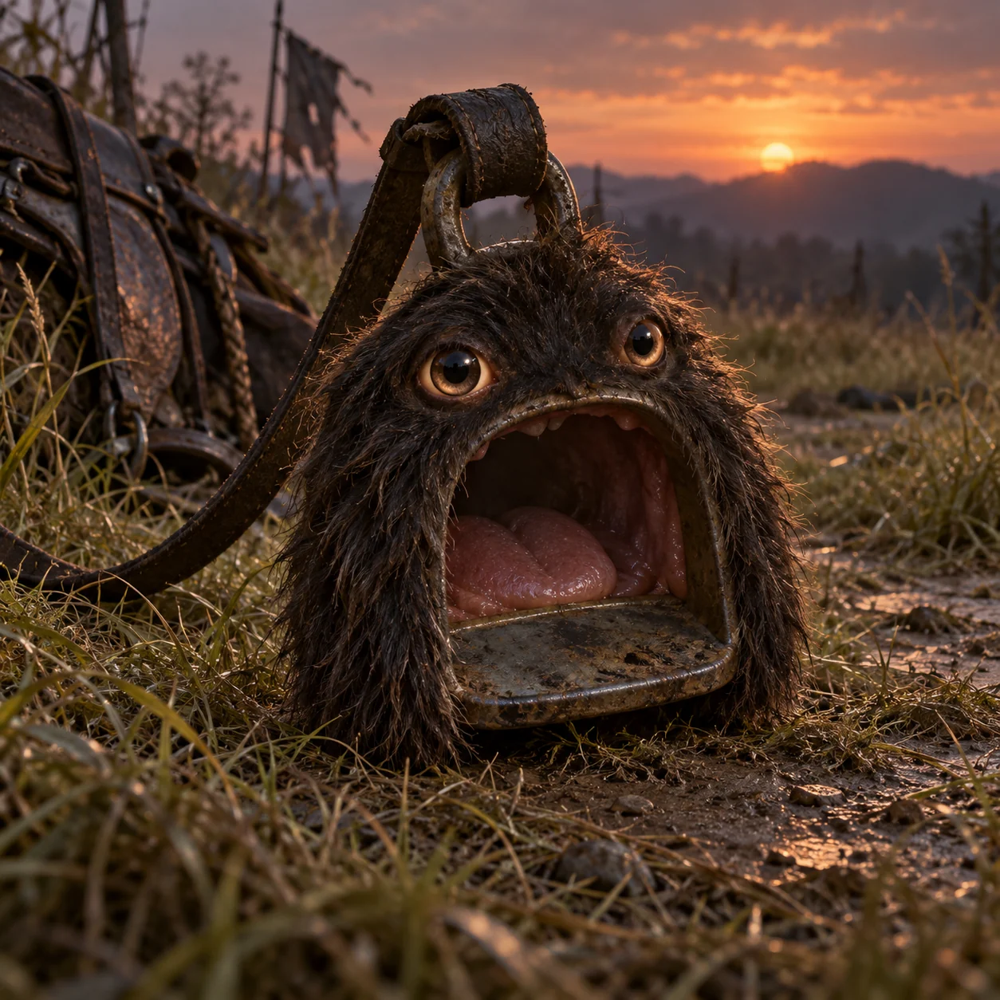
Furry stirrup-shaped Abumi-guchi with eyes and mouth on an abandoned field.
Aura: Furry stirrup-shaped Abumi-guchi with eyes and mouth on an abandoned field.
Audit ciri dan sumber
Living furry stirrup-mouth with two eyes, one mouth, metal footplate and strap; no dog ears or limbs, abandoned field at dusk.
Review sumberONE square premium painterly naturalistic Mythics illustration, main batch-1000 house style. ABUMI-GUCHI, animate Japanese STIRRUP-MOUTH YŌKAI (c01,c05). One small squat furry object-creature visibly shaped like old Japanese horse STIRRUP with curved loop/footplate and physical tack strap, TWO expressive eyes above a large open natural MOUTH integrated into the stirrup cavity (c05), no human torso, dog ears, arms or arbitrary animal legs. Shaggy dark soft fur covers the stirrup rim, worn metal footplate subtly remains visible as origin, fur physical not mist. On an abandoned grassy field path at dusk, sparse old horse tack nearby, speculative fallen commander's abandoned stirrup context is marked interpretation c06; no killed commander or war gore. Low intimate camera, expectant eerie intent eyes and mouth make supernatural object unmistakable. No modern dog-waits-for-owner story from c07, giant transformation, aura or text. Original composition, coherent visible anatomy. No text, logos, labels, borders, watermark, nudity, graphic gore, modern film/game/anime/comic designs.
Âu Cơ
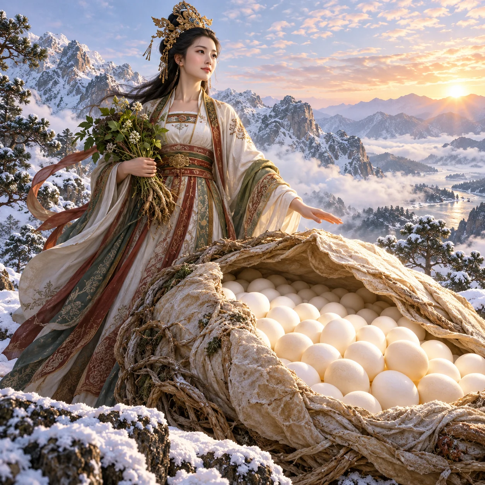
Immortal Âu Cơ as compassionate mountain ancestral mother beside the hundred-egg sac.
Aura: Immortal Âu Cơ as compassionate mountain ancestral mother beside the hundred-egg sac.
Audit ciri dan sumber
Mountain fairy mother with herbs and large partially open egg sac; visible eggs continue into occluded sack, no fabricated wings or generic glow.
Review sumberONE square premium painterly naturalistic Mythics illustration in the main batch-1000 house style. ÂU CƠ, respectful Vietnamese immortal MOUNTAIN FAIRY and compassionate ancestral mother, one beautiful living woman one head two arms two legs, modest historic Vietnamese ceremonial drapery and dignified headdress inspired by shrine statue without copying pose (c01,c03,c09). In snowy mountain sanctuary (c01,c03,c05), stands protectively over an immense partly opened EGG SAC holding MANY WHITE EGGS, narrative of the hundred-egg bundle (c01,c12); some eggs naturally occluded within sac, do not imply fewer than one hundred in whole bundle. One hand open over the sack, other carries simple herbs indicating medical skill c03, exact herbs editorial not claimed fixed attribute. Strong compassionate gaze and miracle egg sac unmistakably fairy mother, natural dawn/snow light gives grandeur. No invented wings, aura, half-crane anatomy, glowing egg magic or ordinary bride portrait. Coherent anatomy, original composition. No text, labels, logos, borders, watermark, nudity or graphic gore.
Baigujing
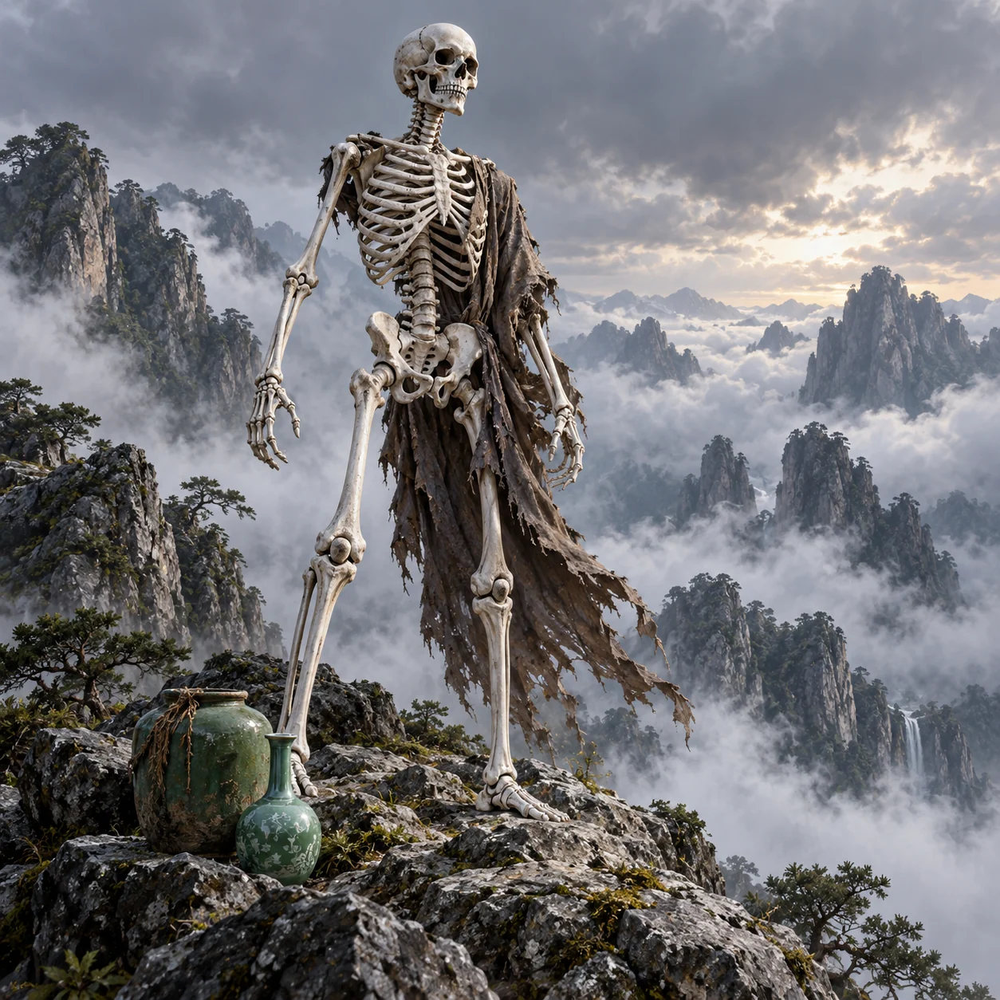
White Bone Spirit true skeletal form; no modern adaptation.
Aura: No sourced generic supernatural glow; natural moonlight and mountain mist only.
Audit ciri dan sumber
True form white human skeleton with one head, two arms/two legs, natural bony hands/feet, green jar and bottle as disguise symbols; mountain atmosphere without neon or modern design.
Review sumberONE square premium painterly naturalistic Mythics illustration, main batch-1000 house style. ONE FULL white HUMAN SKELETON, one head two arms two legs normal hands fingers, uncovered dry clean white skull ribs pelvis limbs c03c12. Upright threatening alert stance on steep Baihu mountain ridge c14c16. An opaque plain ragged robe drapes only shoulder and side for atmosphere, leave skeletal anatomy unmistakable; NO living woman's face, breasts, crown, armor, blue neon eyes or flesh. Place green clay jar and green porcelain bottle c06 at feet as symbols of abandoned disguise. Mountain mist natural and grave menace, no multiple bodies or falsecorpse gore. Living formidable presence and original composition, anatomically coherent full silhouette. No text, labels, logos, borders, watermark, nudity, graphic gore, modern film/game/anime/comic designs.
Suvannamaccha
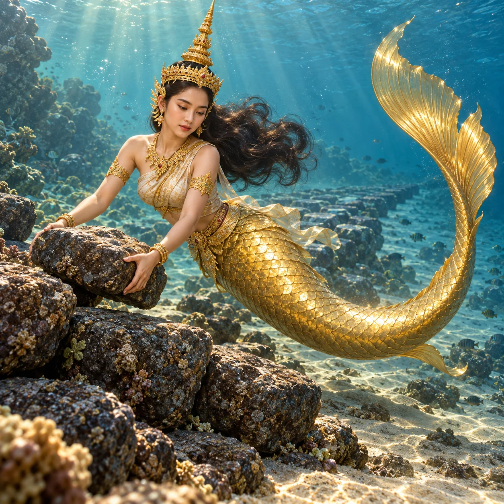
Golden-tailed Suvannamaccha returning a bridge stone underwater in the Thai/Cambodian narrative.
Aura: Golden-tailed Suvannamaccha returning a bridge stone underwater in the Thai/Cambodian narrative.
Audit ciri dan sumber
Two human arms and one golden fish tail without legs; returning a stone underwater, modest Thai dress, natural light.
Review sumberONE square premium painterly naturalistic Mythics illustration in the main batch-1000 house style. SUVANNAMACCHA, golden mermaid princess of THAI RAMAKIEN and Cambodian REAMKER, not Valmiki's Ramayana (c01,c05,c10). One living beautiful woman with ONE head TWO arms, modest opaque Thai traditional fitted upper garment and tall restrained princess headdress informed by charm reference; lower body ONE long GOLDEN SCALED FISH TAIL with broad natural tail fins, NO human legs (c01,c06). Swims at sea bottom beside piled stones of Hanuman's bridge to Lanka, one hand returns a bridge stone (c03,c07,c14,c20), tail curves in powerful graceful swimming pose and whole hybrid anatomy readable. Warm natural sunlight shafts through blue-green water glint physically on gold scales, dignified princess presence not ordinary fish, no coloured magic, modern cartoon/film mermaid costume, trident or unsupported powers. Coherent anatomy, original composition. No text, labels, logos, borders, watermark, nudity or graphic gore.
Nang Ta-khian
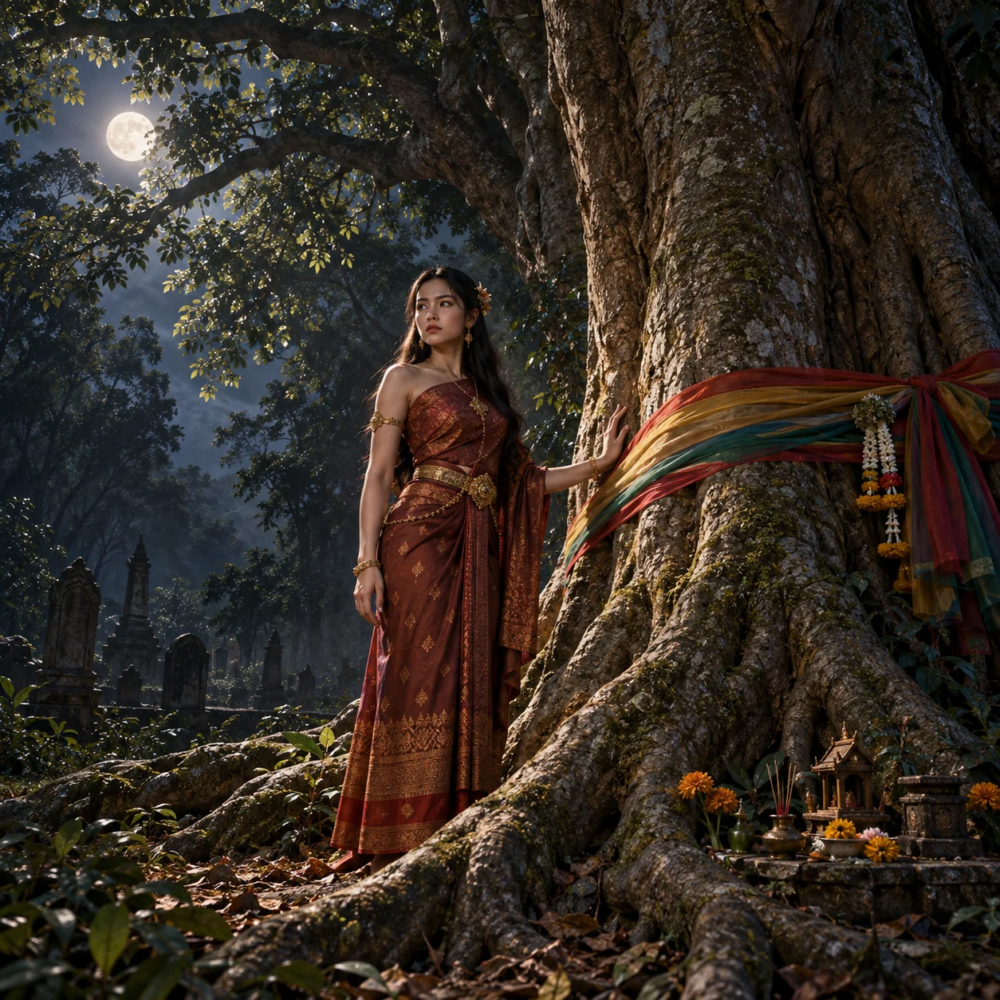
Reddish-brown-dressed human-form Nang Ta-khian protecting a satin-wrapped ancient Hopea tree.
Aura: Reddish-brown-dressed human-form Nang Ta-khian protecting a satin-wrapped ancient Hopea tree.
Audit ciri dan sumber
Brown-red Thai dress, two arms, associated large Hopea tree wrapped in satin; natural moonlight and offerings, no green banana-spirit conflation.
Review sumberONE square premium painterly naturalistic Mythics illustration, main batch-1000 house style. NANG TA-KHIAN, beautiful living young female Thai TREE SPIRIT of enormous HOPEA ODORATA (c01,c02,c23). One head two arms two legs, opaque reddish-brown traditional Thai dress, natural human skin and long black hair; NO green skin, green dress, hovering feet or other Nang Tani traits. Protective but formidable gaze as she stands at huge ancient buttressed tree trunk, one hand gently touching bark, huge canopy and trunk dominate dark forest scale around her. Physical coloured satin wrapped round trunk and small offerings at root (c05,c14). Distant subtle cemetery stones in shadow allude to c11, no victims or skeletons. Shape in leaves and focused natural moonlight produce uncanny revered guardian presence without transparency, tree-fusion anatomy, coloured mist, energy beams or invented magic glow. Original composition, readable anatomy; no modern film/game/anime/comic design, text, logos, labels, border, watermark, nudity or graphic gore.
Princess Iron Fan
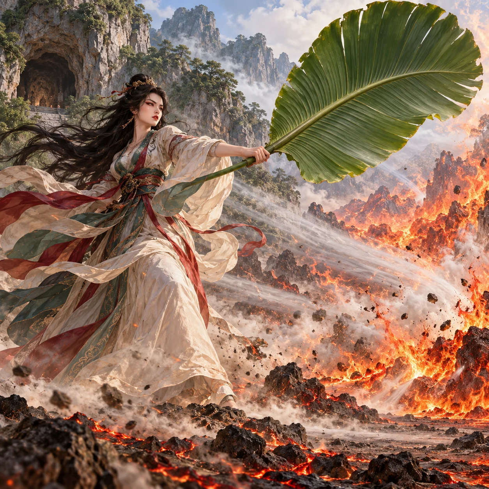
Journey to the West Luocha Nu with banana-leaf fan.
Aura: Cold wind and extinguishing fire from banana fan c04c05c06, physically visible winds, no luminous energy rings.
Audit ciri dan sumber
Beautiful adult female rakshasa with enormous green banana-leaf fan, two arms and robe-covered legs; cold wind extinguishes Flaming Mountain fire, no horns or modern design.
Review sumberONE square premium painterly naturalistic Mythics illustration, main batch-1000 house style. Beautiful formidable adult HUMAN-shaped female rakshasa c02c03, TWO arms TWO legs, modest flowing Chinese robes. Wields ENORMOUS BANANA-LEAF FAN twelve chi long c11, realistic broad green leaflike ribbed fan with stalk, no metal handheld folding fan. One sweeping motion raises cold gale and drives away flames at Flaming Mountains c04c05c06; rolling extinguishing flames and windblown dust/clothes. Cuiyun mountain and cave background c18. No bull horns, insect wings, armor or modern adaptation. Living formidable presence and original composition, anatomically coherent full silhouette. No text, labels, logos, borders, watermark, nudity, graphic gore, modern film/game/anime/comic designs.
Abura-akago
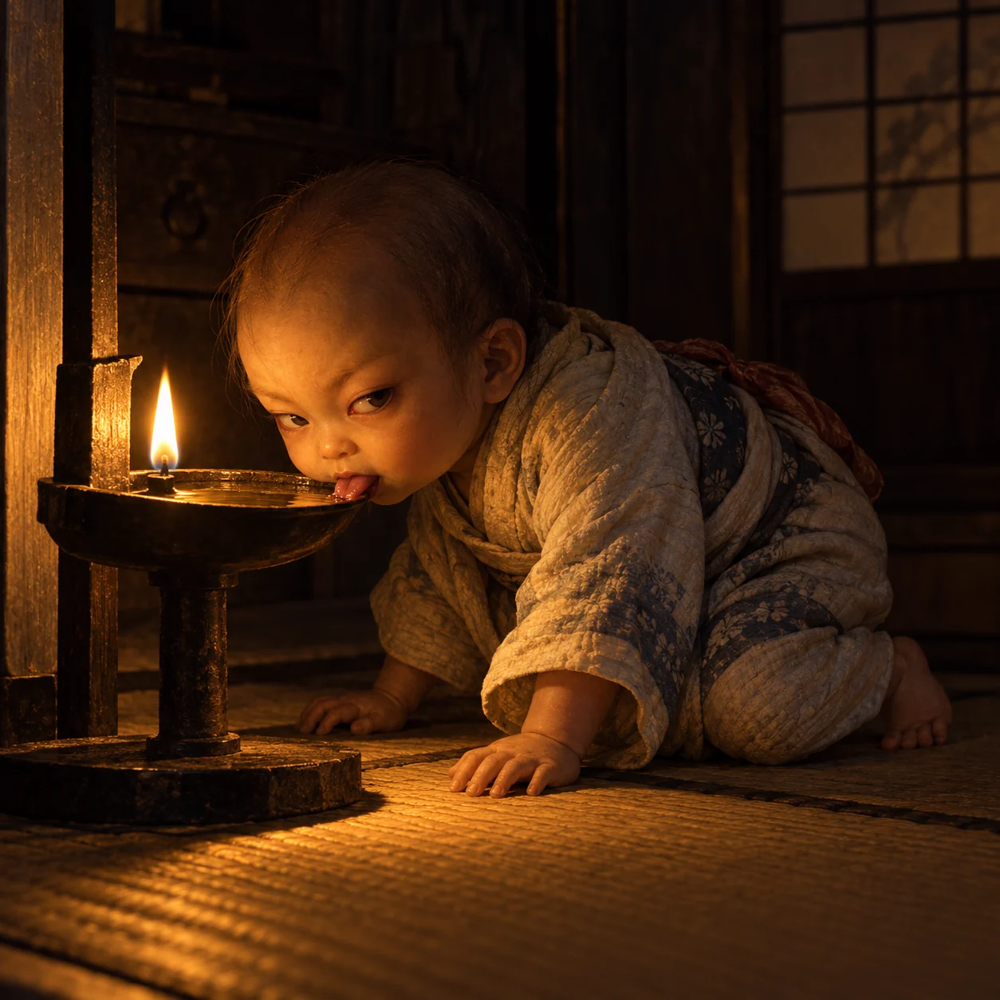
Clothed baby-form Abura-akago uncannily licking oil from a traditional lamp.
Aura: Clothed baby-form Abura-akago uncannily licking oil from a traditional lamp.
Audit ciri dan sumber
Fully clothed oil-licking baby yokai, two arms/legs, tongue at oil edge away from flame; natural lamplight, no fireball transformation.
Review sumberONE square premium painterly naturalistic Mythics illustration, main batch-1000 house style. ABURA-AKAGO, Japanese BABY YŌKAI licking lamp oil as Sekien depicts (c01,c04). One infant-shaped supernatural figure with one head TWO arms TWO legs, completely wrapped in opaque traditional cloth robe/diaper, no infant nudity. Crouches beside a low OLD JAPANESE OIL LAMP in a dark wood/tatami house, face bent to lamp bowl, little tongue clearly reaches a safe side lip with lamp OIL, flame at other side well separated from mouth. Oil thief rebirth c04 gives uncanny eerily intent adult-like watchful expression but natural infant anatomy; physical old household scene inspired by reference but original. Natural small lamp flame casts dramatic shadows and warm highlights against dark room, no luminous fireball surrounding infant or simultaneous transformation borrowed from modern c05, no burns or victims. Original composition, coherent visible anatomy. No text, logos, labels, borders, watermark, nudity, graphic gore, modern film/game/anime/comic designs.
Akabeko
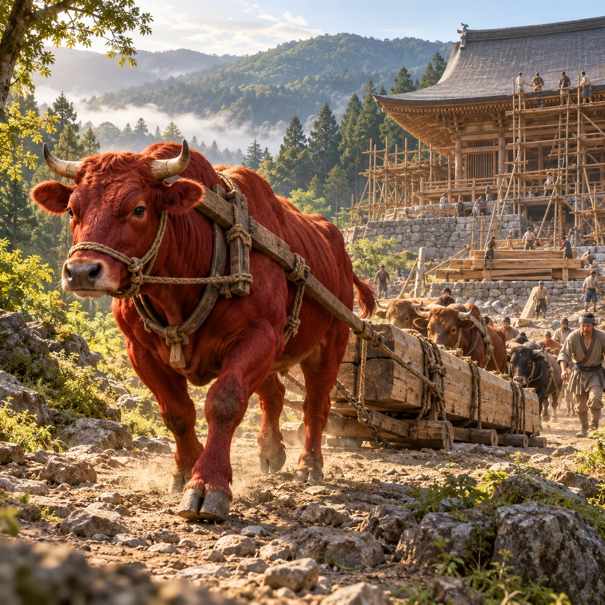
Living red Akabeko leading temple-material cattle and hauling timber toward Enzoji.
Aura: Living red Akabeko leading temple-material cattle and hauling timber toward Enzoji.
Audit ciri dan sumber
Living red cow with four hooved legs, two small horns and tail, simple harness pulling temple timbers; natural daylight, no toy/body targets.
Review sumberONE square premium painterly naturalistic Mythics illustration, main batch-1000 house style. AKABEKO, living mysterious RED COW of AIZU legend leading cattle carrying materials to build ENZOJI TEMPLE around 807 (c01,c02,c03). One great crimson-red furred cow, normal bovine anatomy one head FOUR strong legs with hooves, small natural cow horns and one tail, body muscular and alive; no painted target circles, papier-mâché texture, bobble-head neck joint or toy proportions. A simple wooden harness lets the RED LEAD COW pull massive old timber along rough temple path, a few smaller distant natural cattle and partly built wooden Buddhist temple establish documented construction narrative (c03). Steady determined wise gaze and forceful forward stride create legendary protective presence. Natural warm mountain morning and physical dusty beam scale, no emitted holy aura or disease-healing magic, statue or ordinary grazing cattle portrait. Original composition, coherent visible anatomy. No text, logos, labels, borders, watermark, nudity, graphic gore, modern film/game/anime/comic designs.
Apsonsi
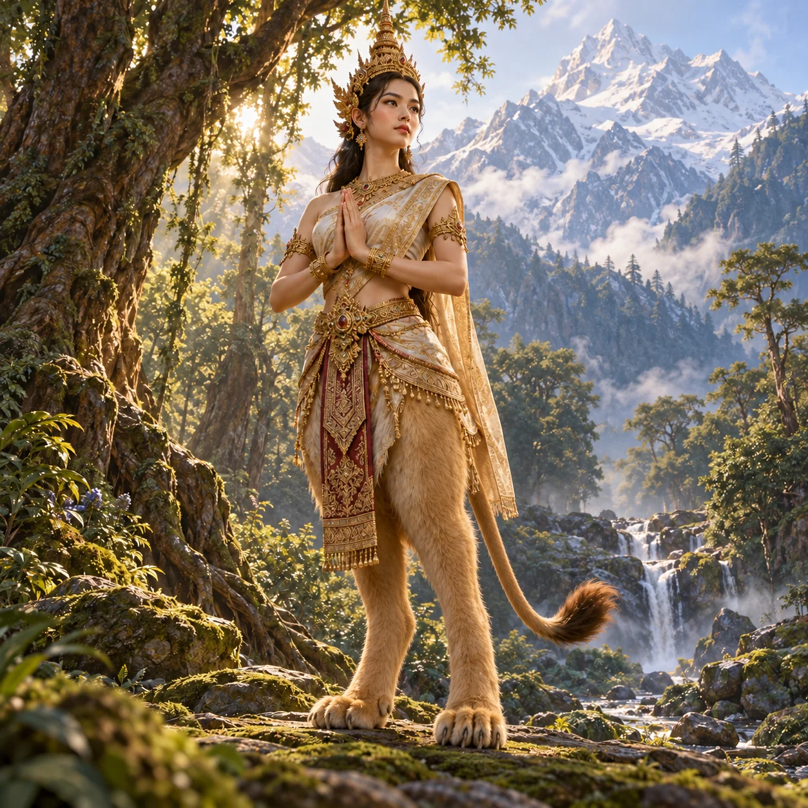
Living upright woman-lion Apsonsi with two lion hindlegs, tail and protective wai in Himavanta.
Aura: Living upright woman-lion Apsonsi with two lion hindlegs, tail and protective wai in Himavanta.
Audit ciri dan sumber
Corrected to exactly two lion hind legs/two paws, one tail, human head/torso/two arms. Living fur and modest Thai dress, no extra hind leg.
Review sumberEdit anatomy ONLY. This upright Apsonsi must have exactly TWO lion hind legs and TWO paws, like biped upright human. REMOVE entirely the extra rear leg/paw at far viewer RIGHT around x840. Keep the nearer right leg around x710 and left leg around x515. Fill deleted limb with natural forest background. TWO lower limbs total, one long lion tail behind them. Preserve human torso, head, two arms, wai hands, modest Thai clothing, face, forest, lighting, all other aspects.
Mae Nak Phra Khanong
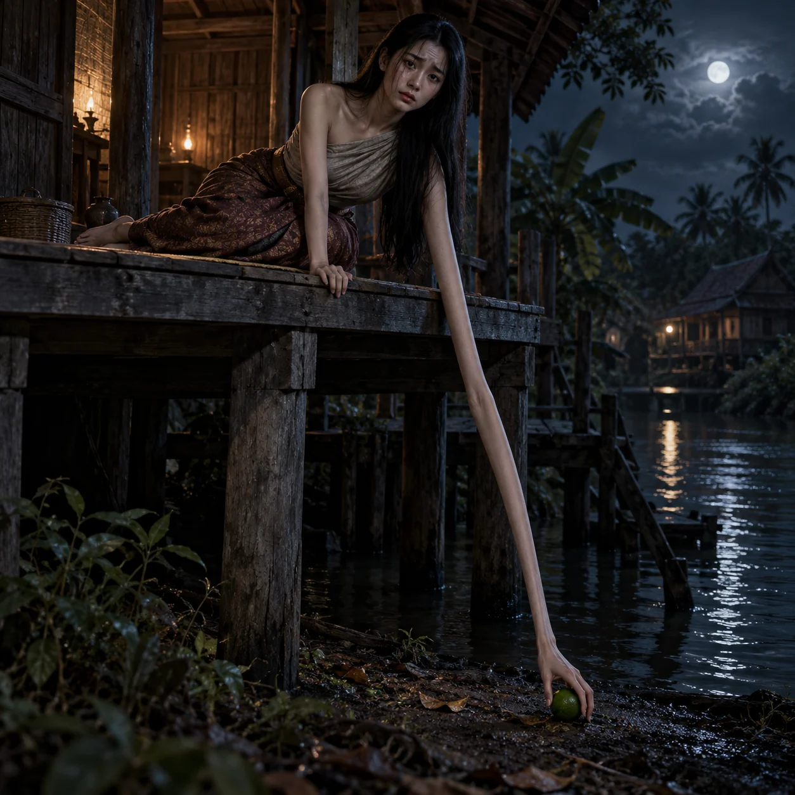
Human-form Mae Nak on a canal-house veranda stretching one arm impossibly down to retrieve a lime.
Aura: Human-form Mae Nak on a canal-house veranda stretching one arm impossibly down to retrieve a lime.
Audit ciri dan sumber
Human-form ghost wife, exactly two arms with one extended unnaturally to pick up lime below veranda; modest dress, canal house at night, no extra joints.
Review sumberONE square premium painterly naturalistic Mythics illustration, main batch-1000 house style. MAE NAK PHRA KHANONG, ghost of a young Thai wife appearing in HUMAN FORM (c10), one head TWO arms TWO legs, modest historical Thai opaque wrapped blouse and skirt. On the raised wooden veranda of her old canal-side home (c09), one normal hand supports her while her OTHER ARM stretches to an IMPOSSIBLE several-metre LENGTH as a single anatomically continuous arm down from veranda to a small GREEN LIME on the ground (c04). Only one elbow and one hand on stretched arm, no branching limbs or giant finger tendrils. Show entire long curving arm from shoulder to hand and lime so uncanny tale reads immediately. Grieving watchful face turns towards viewer, body proportion normal but impossible arm unmistakably ghostly. Natural night side-light, dark canal below, sorrowful eerie horror without monstrous added teeth or skin, blood or extra babies. No aura or energy effects. Original composition, coherent anatomy, no modern film/game/anime/comic design, text, labels, logos, borders, watermark, nudity or graphic gore.
Rangda
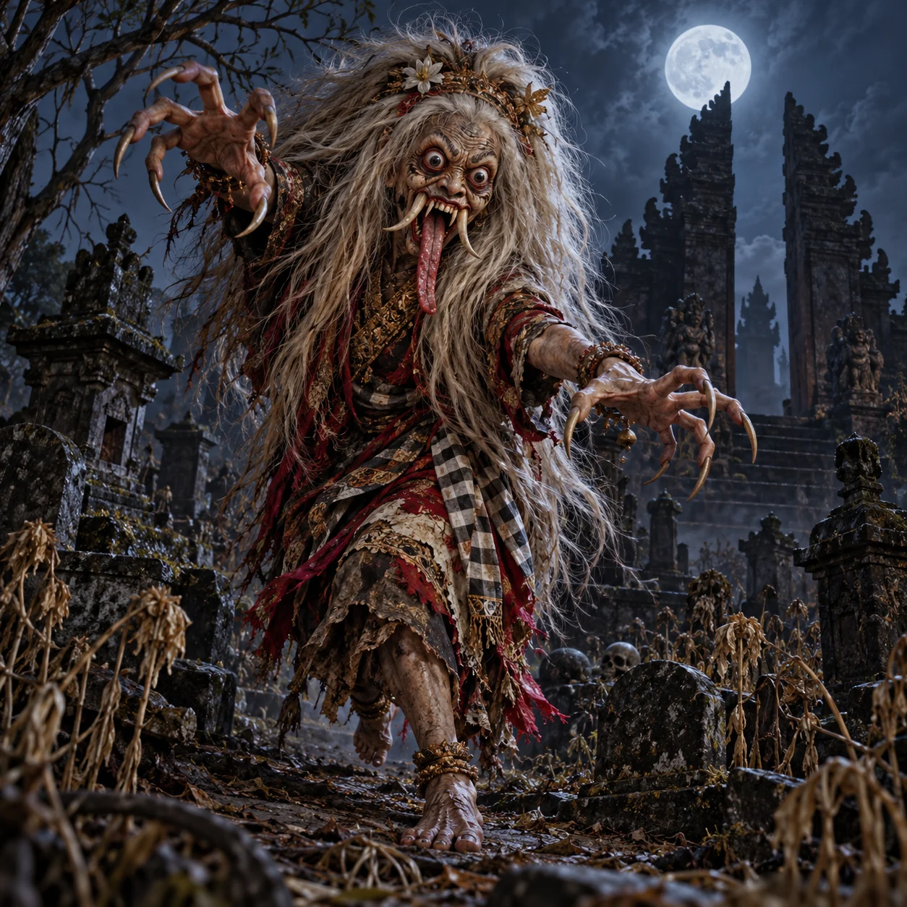
Living mask-faced clawed Rangda with fangs, goggle eyes, unkempt hair and long tongue at cemetery.
Aura: Living mask-faced clawed Rangda with fangs, goggle eyes, unkempt hair and long tongue at cemetery.
Audit ciri dan sumber
Two arms, two legs, prominent eyes, fangs, long tongue, pale wild hair and claws; modest opaque costume, active cemetery/temple scene, no generic glow.
Review sumberONE square premium painterly naturalistic Mythics illustration in the main batch-1000 house style. RANGDA, sacred Balinese leyak queen represented respectfully as a living terrifying old woman, ONE head TWO arms TWO legs (c01,c04). Huge goggle eyes, long fangs, LONG protruding tongue, unkempt pale hair and long sharp physical finger claws (c04), face mask-like but living spirit rather than stage dancer or prop. Pendulous breast contour covered completely by opaque traditional layered cloth to obey modesty; no exposed breasts or nudity. Wild animal-like reckless leaping gesture (c11), claws thrust outward with readable fingers. Cemetery setting among dark stone graves and a temple-of-the-dead gateway (c12), blighted dry vegetation may allude to crop harm c09 without inventing energy. Natural moonlight and deep shadows, fearsome supernatural character presence, no emitted coloured glow or attack spell. Coherent anatomy, original composition. No text, labels, logos, borders, watermark, nudity or graphic gore.
Shachihoko
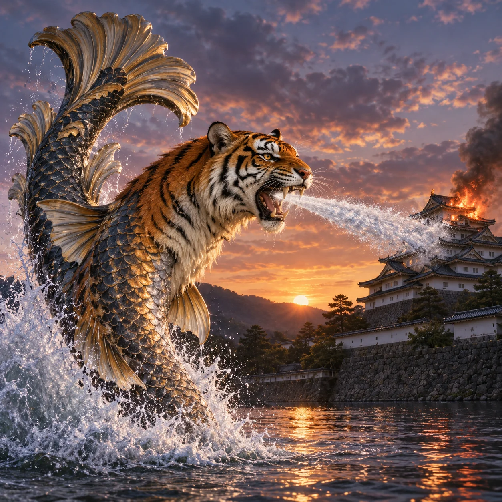
Living tiger-headed fish Shachihoko spraying water to protect a castle.
Aura: Living tiger-headed fish Shachihoko spraying water to protect a castle.
Audit ciri dan sumber
Living tiger-headed fish, fins and raised fish tail, no legs or wings; mouth sprays water toward roof fire, natural dusk.
Review sumberONE square premium painterly naturalistic Mythics illustration, main batch-1000 house style. A LIVING JAPANESE SHACHIHOKO, one TIGER HEAD physically joins one FISH BODY (c02), strong tiger muzzle, striped fur head, actual feline ears, expressive fierce protective eyes, scaled fish trunk, fins and broad curled fish tail; NO human torso, wings or tiger legs. Curves upward in active water-leap beside a distant Japanese castle roof, SPRAYS ONE CLEAR STREAM OF WATER from mouth toward a small distant roof fire to protect castle (c03), restrained localized action not apocalyptic magic. Fish body and tiger head full silhouette visible, tail bends skyward matching reference iconic outline but not composition. Natural dusk and water highlights, flesh/scales/fur alive rather than bronze/gold roof ornament, strong guardian presence. No flame-breathing, generic glowing aura, statue or toy. Original composition, coherent visible anatomy. No text, logos, labels, borders, watermark, nudity, graphic gore, modern film/game/anime/comic designs.
Nat
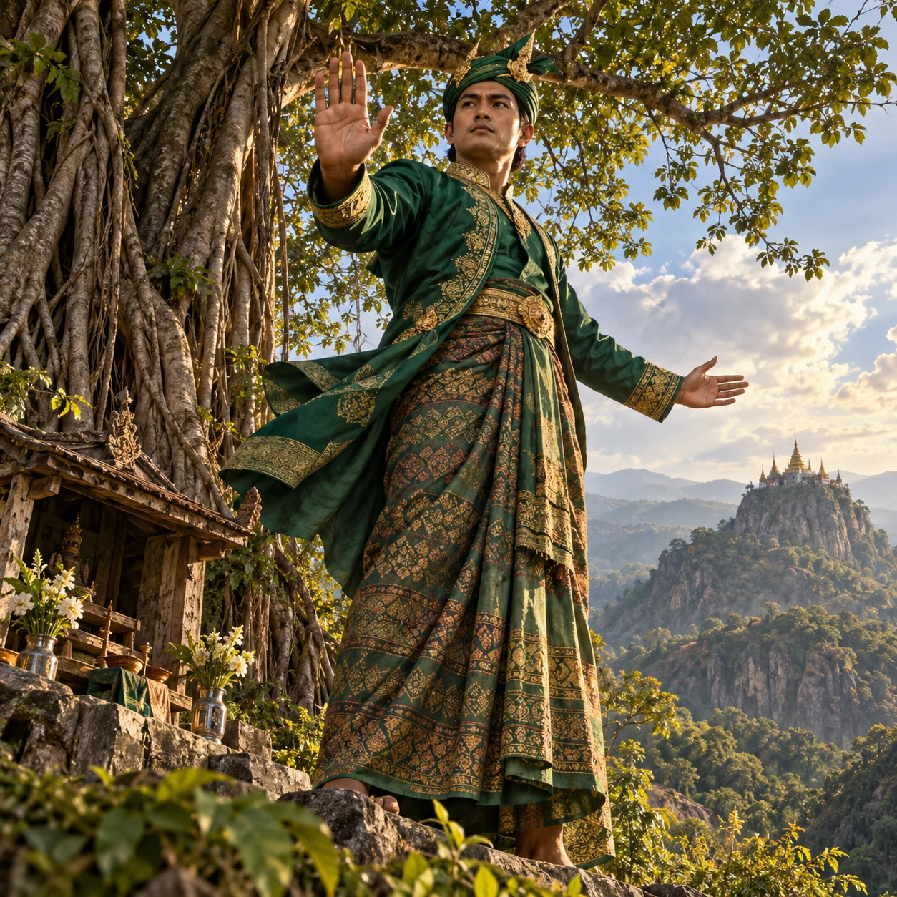
Respectful generalized human-origin Burmese guardian nat in ceremonial attire over a village shrine and mountain tree.
Aura: Respectful generalized human-origin Burmese guardian nat in ceremonial attire over a village shrine and mountain tree.
Audit ciri dan sumber
Living human-form guardian in Burmese ceremonial clothing; village shrine and distant Mount Popa, calm authoritative stance, natural light.
Review sumberONE square premium painterly naturalistic Mythics illustration in the main batch-1000 house style. One BURMESE NAT GUARDIAN SPIRIT, generalized deified high-status human nat sein rather than an unresearched specific named nat (c02,c14,c20). One living dignified adult with one head two arms two legs, beautifully tailored historic Burmese green ceremonial coat, patterned longyi and traditional head ornament informed by inspected Brother Nats shrine sculpture, no new animal parts. Protector of village, tree and mountain (c16), foreground upright protective open-palmed gesture above a small shrine and old banyan-like tree in Myanmar mountain setting near Popa (c04,c08). Low devotional camera and strong commanding expression create revered guardian presence, unusually solemn natural side-light, cloth moving in mountain wind. NOT a statue, medium or ordinary everyday portrait, no ghost transparency, supernatural enlargement asserted as fact, arbitrary halo, energy effect, weapons or generic mist. Coherent anatomy, original composition. No text, labels, logos, borders, watermark, nudity or graphic gore.
Ōyamatsumi
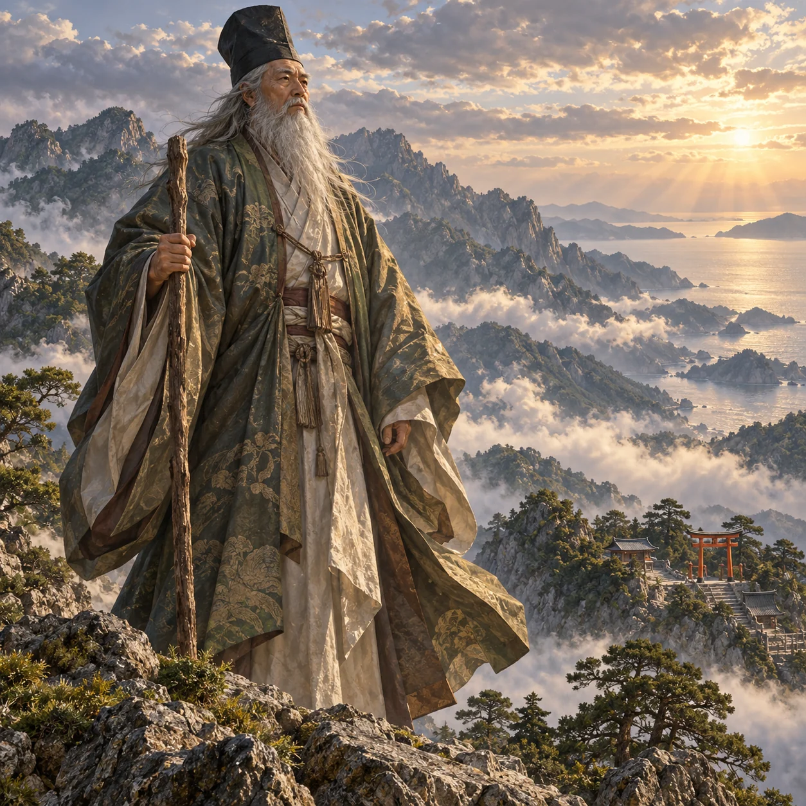
Respectful elderly humanlike Ōyamatsumi mountain kami in historical robe iconography above mountain shrine.
Aura: Respectful elderly humanlike Ōyamatsumi mountain kami in historical robe iconography above mountain shrine.
Audit ciri dan sumber
Respectful elderly human-form mountain kami based on historical woodcut iconography as artistic choice; small mountain shrine and distant sea, natural light only.
Review sumberONE square premium painterly naturalistic Mythics illustration, main batch-1000 house style. ŌYAMATSUMI, respectful JAPANESE MOUNTAIN KAMI (c01,c04,c05), humanlike elderly masculine presentation based on inspected historical Shinbutsu-zue icon: long solemn beard, simple tall traditional court/ritual hat, enormous draped opaque old Japanese robes with wide sleeves. One head two arms two legs, NO rock skin, horns, wings or animal attributes. Foreground imposing upright figure framed against great layered Japanese mountain peaks and small shrine torii below (c01,c04), deeply commanding calm gaze and wind-moved robe silhouette provide mountain-deity presence, not an ordinary contemporary hiker. A distant natural sea visible between mountain valleys may reflect documented Toba shrine mountain/sea domain c06. Natural slanting dawn through cloud, no emitted magic, cosmic aura, elemental attack, conflation with fire birth as fire power, sword or invented fixed anatomy. Original composition, readable anatomy; no modern film/game/anime/comic design, text, logos, labels, border, watermark, nudity or graphic gore.
Tenjin
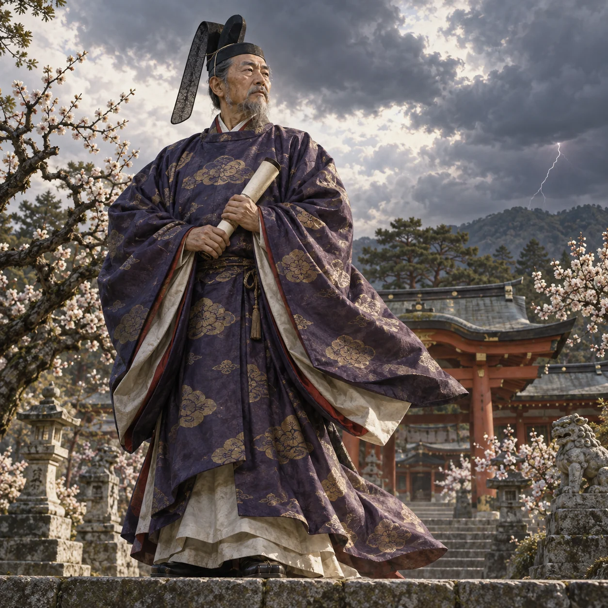
Tenjin as dignified deified court scholar with closed scroll at shrine under restrained distant thunder.
Aura: Tenjin as dignified deified court scholar with closed scroll at shrine under restrained distant thunder.
Audit ciri dan sumber
Respectful scholar court dress and closed unlettered scroll, shrine/plum trees, one restrained distant lightning bolt, no beams from hands.
Review sumberONE square premium painterly naturalistic Mythics illustration, main batch-1000 house style. TENJIN, respectful Japanese deified scholar SUGAWARA NO MICHIZANE (c01,c04), one living spirit with elderly scholarly face, short beard, exactly one head two arms two legs. Opaque historic Japanese court scholar robe with broad sleeves and traditional court cap inspired by inspected Sengai icon; no modern scholar clothes, war armour or weapons. Holds a plain CLOSED UNLETTERED SCROLL as editorial symbol of scholarship c04. Upright imposing guardian of learning before a small Kitano-style shrine gateway (c08), strong wise calm gaze and sweeping robe in natural wind create revered kami presence, not ordinary everyday male portrait. A few distant storm clouds with ONE faint far-off LIGHTNING FLASH express the documented thunder-deity combination c06, restrained background only; no beams from hands or eyes. Natural cool storm-break daylight, original dignified composition. Original composition, coherent visible anatomy. No text, logos, labels, borders, watermark, nudity, graphic gore, modern film/game/anime/comic designs.